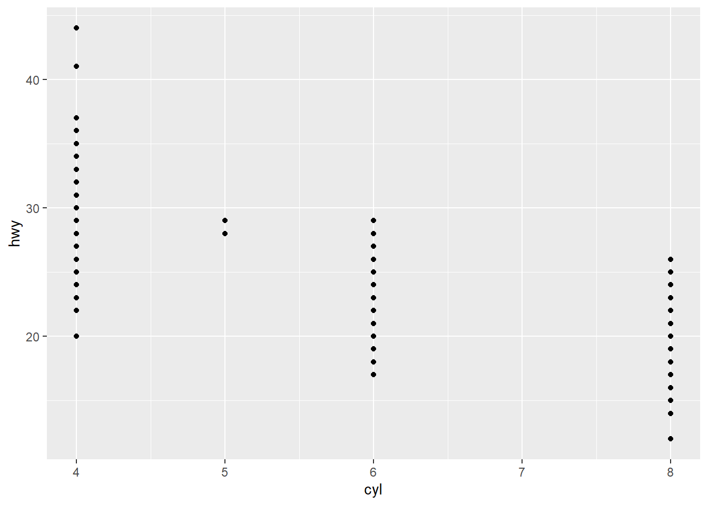
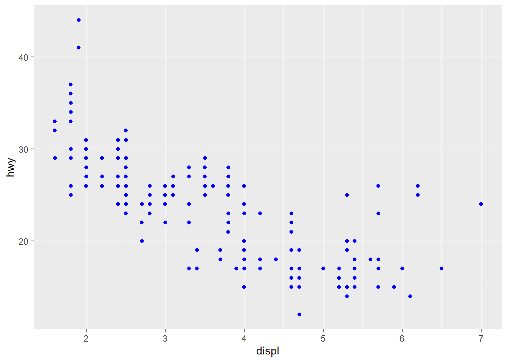

About
bhm48, dl2236, ls929
2/10/2022
R Markdown
This is an R Markdown document. Markdown is a simple formatting syntax for authoring HTML, PDF, and MS Word documents. For more details on using R Markdown see http://rmarkdown.rstudio.com.
When you click the Knit button a document will be generated that includes both content as well as the output of any embedded R code chunks within the document. You can embed an R code chunk like this:
summary(cars)## speed dist
## Min. : 4.0 Min. : 2.00
## 1st Qu.:12.0 1st Qu.: 26.00
## Median :15.0 Median : 36.00
## Mean :15.4 Mean : 42.98
## 3rd Qu.:19.0 3rd Qu.: 56.00
## Max. :25.0 Max. :120.00ggplot
#ggplot lesson 1
library(tidyverse)
head(cars)## speed dist
## 1 4 2
## 2 4 10
## 3 7 4
## 4 7 22
## 5 8 16
## 6 9 10tail(cars, 10)## speed dist
## 41 20 52
## 42 20 56
## 43 20 64
## 44 22 66
## 45 23 54
## 46 24 70
## 47 24 92
## 48 24 93
## 49 24 120
## 50 25 85?ggplot
#ggplot(data = <DATA>) +
# <GEOM_FUNCTION>(
# mapping = aes(<MAPPINGS>),
ggplot(data = mpg) +
geom_point(mapping = aes(x = displ, y = hwy))
ggplot(data = mpg) +
geom_point(mapping = aes(x = cyl, y = hwy))
ggplot(data = mpg) +
geom_point(mapping = aes(x = drv, y = class))
ggplot(data = mpg) +
geom_point(mapping = aes(x = displ, y = hwy, color = class, size = cyl))ggplot(data = mpg) +
geom_point(mapping = aes(x = displ, y = hwy, color = cyl, size = class))## Warning: Using size for a discrete variable is not advised.ggplot(data = mpg) +
geom_point(mapping = aes(x = displ, y = hwy, color = class, size = cyl), shape = 1)ggplot(data = mpg) +
geom_point(mapping = aes(x = displ, y = hwy), color = "blue")
ggplot(data = mpg) +
geom_point(mapping = aes(x = displ, y = hwy), color = "blue") +
geom_smooth(mapping = aes(x = displ, y = hwy))ggplot(data = mpg, mapping = aes(x = displ, y = hwy)) +
geom_point(color = "blue") +
geom_smooth() +
facet_wrap(~ year)ggplot(data = mpg, mapping = aes(x = displ, y = hwy)) +
geom_point(color = "blue") +
geom_smooth() +
facet_wrap(~ class, ncol = 2)## Warning in simpleLoess(y, x, w, span, degree = degree, parametric =
## parametric, : span too small. fewer data values than degrees of freedom.## Warning in simpleLoess(y, x, w, span, degree = degree, parametric =
## parametric, : pseudoinverse used at 5.6935## Warning in simpleLoess(y, x, w, span, degree = degree, parametric =
## parametric, : neighborhood radius 0.5065## Warning in simpleLoess(y, x, w, span, degree = degree, parametric =
## parametric, : reciprocal condition number 0## Warning in simpleLoess(y, x, w, span, degree = degree, parametric =
## parametric, : There are other near singularities as well. 0.65044## Warning in predLoess(object$y, object$x, newx = if
## (is.null(newdata)) object$x else if (is.data.frame(newdata))
## as.matrix(model.frame(delete.response(terms(object)), : span too small.
## fewer data values than degrees of freedom.## Warning in predLoess(object$y, object$x, newx = if
## (is.null(newdata)) object$x else if (is.data.frame(newdata))
## as.matrix(model.frame(delete.response(terms(object)), : pseudoinverse
## used at 5.6935## Warning in predLoess(object$y, object$x, newx = if
## (is.null(newdata)) object$x else if (is.data.frame(newdata))
## as.matrix(model.frame(delete.response(terms(object)), : neighborhood
## radius 0.5065## Warning in predLoess(object$y, object$x, newx = if
## (is.null(newdata)) object$x else if (is.data.frame(newdata))
## as.matrix(model.frame(delete.response(terms(object)), : reciprocal
## condition number 0## Warning in predLoess(object$y, object$x, newx = if
## (is.null(newdata)) object$x else if (is.data.frame(newdata))
## as.matrix(model.frame(delete.response(terms(object)), : There are other
## near singularities as well. 0.65044## Warning in simpleLoess(y, x, w, span, degree = degree, parametric =
## parametric, : pseudoinverse used at 4.008## Warning in simpleLoess(y, x, w, span, degree = degree, parametric =
## parametric, : neighborhood radius 0.708## Warning in simpleLoess(y, x, w, span, degree = degree, parametric =
## parametric, : reciprocal condition number 0## Warning in simpleLoess(y, x, w, span, degree = degree, parametric =
## parametric, : There are other near singularities as well. 0.25## Warning in predLoess(object$y, object$x, newx = if
## (is.null(newdata)) object$x else if (is.data.frame(newdata))
## as.matrix(model.frame(delete.response(terms(object)), : pseudoinverse
## used at 4.008## Warning in predLoess(object$y, object$x, newx = if
## (is.null(newdata)) object$x else if (is.data.frame(newdata))
## as.matrix(model.frame(delete.response(terms(object)), : neighborhood
## radius 0.708## Warning in predLoess(object$y, object$x, newx = if
## (is.null(newdata)) object$x else if (is.data.frame(newdata))
## as.matrix(model.frame(delete.response(terms(object)), : reciprocal
## condition number 0## Warning in predLoess(object$y, object$x, newx = if
## (is.null(newdata)) object$x else if (is.data.frame(newdata))
## as.matrix(model.frame(delete.response(terms(object)), : There are other
## near singularities as well. 0.25# stat = <STAT>,
# position = <POSITION>
# ) +
# <COORDINATE_FUNCTION> +
# <FACET_FUNCTION> +
# <THEME_FUNCTION>Including Plots
You can also embed plots, for example:

Note that the echo = FALSE parameter was added to the code chunk to prevent printing of the R code that generated the plot.